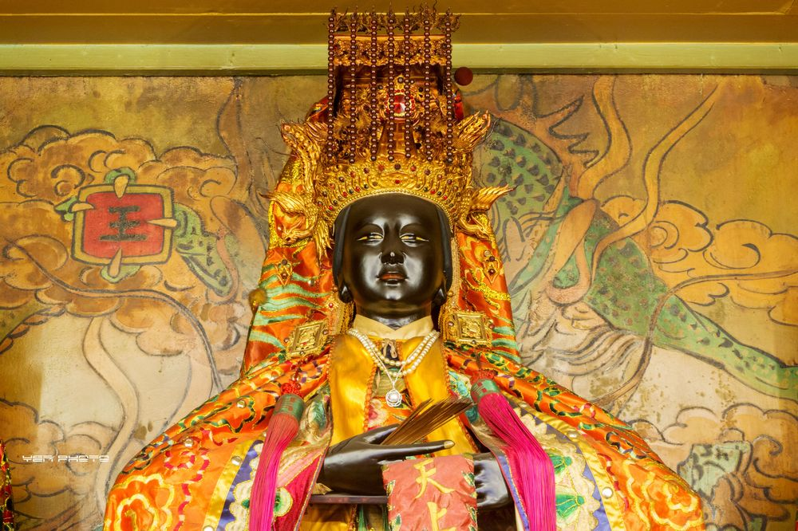
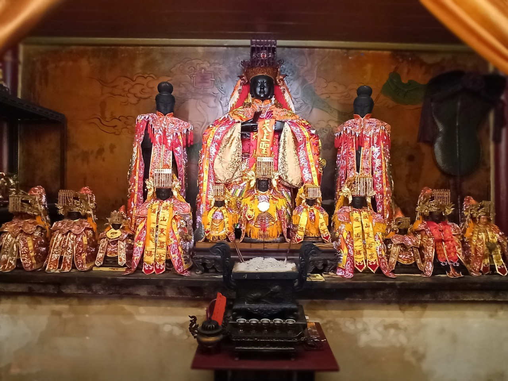
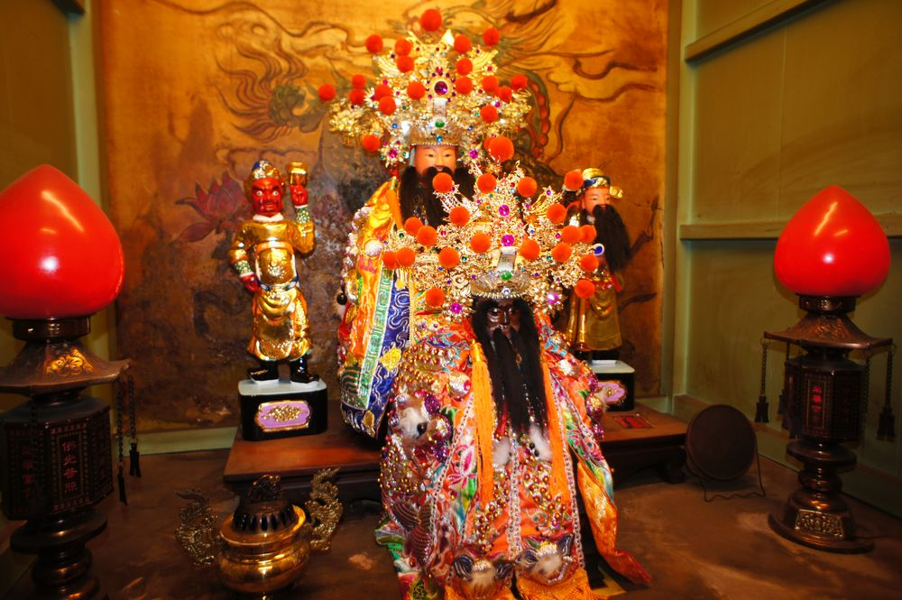
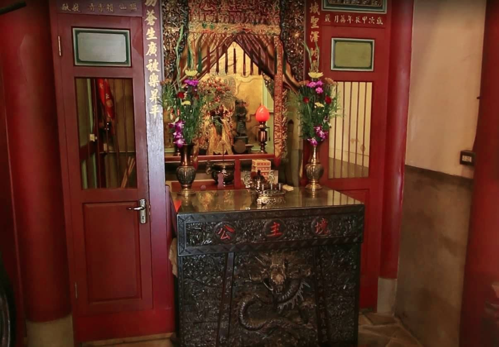
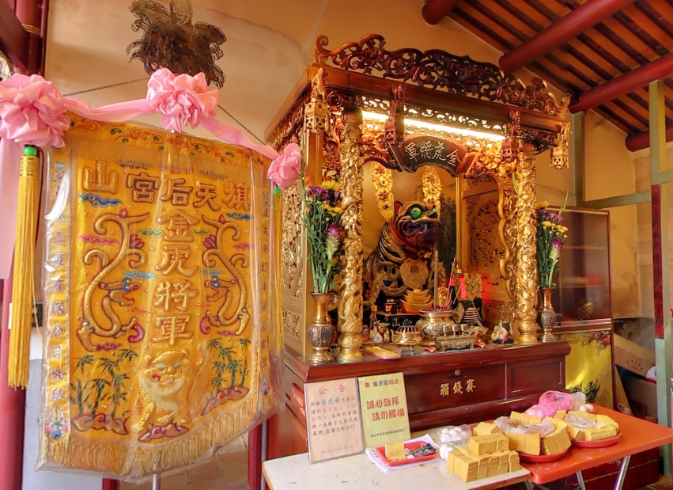
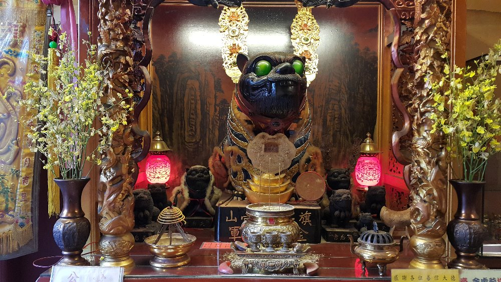
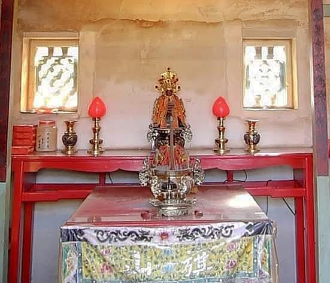
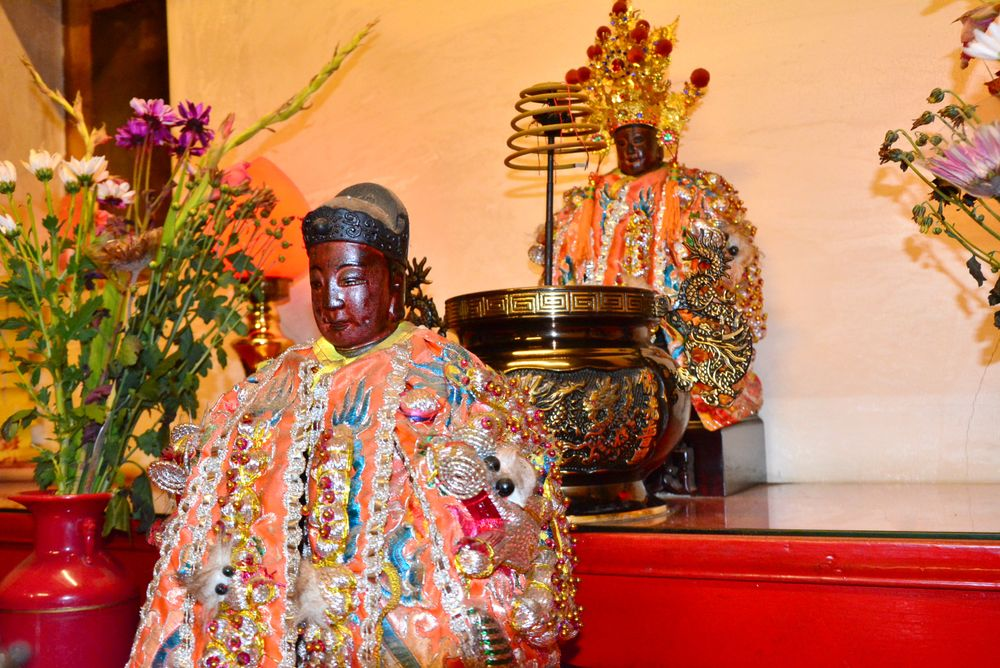

| 天上聖母 |

媽祖是以臺灣、中國東南沿海為中心、擴及東亞（琉球、日本及新加坡等東南亞地區）沿海一帶的海神信仰（又稱天上聖母 、天后、天妃、天妃娘娘、湄洲娘媽、媽祖婆等）。媽祖影響力由福建莆田湄洲島傳播，歷經千年，對東亞海洋文化及南中國海產生重大影響，稱為媽祖文化。媽祖原名林默（暱稱「默娘」），排行家中老么，聰慧過人、沉默不多言，終身未婚，後常於海湧風浪顯靈、颱風轉彎、保祐平安航行，世人認為是護國庇民」的海洋國家守護神。2009年10月，媽祖信仰入選聯合國教科文組織人類非物質文化遺產代表作名錄。生平 媽祖姓林，歷史考証確實有此人，出生於宋太祖建隆元年福建路泉州府莆田縣湄洲島東螺村，民間傳說媽祖「出生時不啼哭」，因而取名為「默」。文獻或有記為「默娘」，而「娘」字為舊時對單名女子之通稱，故媽祖原名應以「林默」。
信仰源起 自北宋開始神格化，被稱為媽祖（興化人對女性祖先的尊稱），並受人建廟膜拜，復經宋高宗封為靈惠夫人，成為朝廷承認的神祇，並在元代忽必烈大汗時，被封為「天妃」，清康熙皇帝再加封至「天后」，清末時，封號共有數十字。媽祖信仰自福建傳播到澳門、浙江、廣東、臺灣、琉球、日本、東南亞（如泰國、馬來西亞、新加坡、越南）等地；天津、上海、南京，以及山東、遼寧沿海均有天后宫或媽祖廟分布。近年媽祖在東亞海洋史的研究，引出東亞在西方航海地理發現前己有的朝貢貿易、琉球網絡及跨國移民史討論，而媽祖信仰圈成為東亞海洋經濟及社會結構形成的歷史見證之一。

各地的媽祖信仰 台灣本島 媽祖信仰是臺灣最普遍的民間信仰之一。由清朝施琅將軍攻打鄭氏政權獲勝，但他說是媽祖顯靈幫助他。之後清朝漢人移民自大陸東南沿海地區渡臺海而來的人變多。因臺海海況時常不佳，因此把媽祖請來一起渡過臺海，而媽祖成為臺灣人最普遍信仰的神明之一。無論是大小街莊、山海聚落，還是通都大邑，都可看到媽祖廟。僅臺灣一地，就有媽祖廟510座，其中有廟史可考者39座，內建於明代的2座，建於清代37座。 臺灣各地媽祖從湄洲分香者稱為「湄洲媽」，從同安分香者稱為「銀同媽」，自安溪分香者稱為「清溪媽」，從泉州三邑分香者稱為「溫陵媽」，由漳州漳浦縣分香者稱為「烏石媽」。也有把來自莆田者稱大媽，來自仙遊者稱二媽，來自惠安者稱三媽。
| 境主公 |

境主，又稱統境主、統境王、境主公，是地方行政神祇，類似佛教伽藍神與儒教的城隍神；與土地神有分別。一般說法，有城池的行政區之神，謂之城隍。佛寺的守護神，謂之伽藍。而道教廟宇的轄區或是無城池的街道、部落之守護神，稱為境主。 有時信眾會把「信仰中心的主神」稱為「境主」，如臺灣臺北淡水人稱淡水清水巖清水祖師為「境主」；高雄鳳山五甲龍成宮稱媽祖、清水祖師、戴府元帥為「三境主」，此「境主」並非地方行政神，而為「信仰中心 的主神」的意思。「境主公」的職司，一般有幾種說法，有說是廟宇建築所在土地範圍的守護神，不過此一職守似乎應屬廟宇落成「安龍謝土」時所安的土地龍神。較普遍的說法則是廟宇「祭祀圈」範圍內的守護神，其「轄區」隨著主 廟的祭祀圈大小而定，往往跨越數個土地祠所在地。
細考其「境主」名稱由來，其實可溯至福建的行政區，自元代以來即有境、舖、都、社等劃分，一般街市大約都屬「境」的層級，也因此各區域廟宇所祀地方管轄神也就稱為「境主」，在泉州一舖也有舖主公通常一舖 分為若干境，如清代台南有十個聯境組織如東段的八協境，主廟為東門大人廟；南段的八吉境主廟為馬兵營保和宮；西段的六興境主廟為開山宮，主廟底下各境又有屬廟，而府城只有一個臺灣府城隍廟。比如泉州府東 隅分為四舖，其中中華舖分三境，壺中境境廟為壺中廟，中和境境廟為粜籴廟。境主宮廟常為鄉約中心，也是清代丁隨地派，公家取消傜役後，地方仕紳臨時加派民眾服役的組織，也類似明代巡警舖、民防、防盜、消 防、守望相助的基層鄉里組織，尤其在林爽文事件後，府城廣設聯境組織。也有人認為，有城（城牆）和隍（護城河）的地區，其護境神為城隍爺；沒有城池範圍的村莊市鎮，其護境神才稱為「境主公」或「統境尊 王」，有些地方甚至還建有以「境主公」為主神的廟宇，如稱“大王宫”。

在廟宇中奉祀的「境主」，還有司法管轄權，被認為有資格管轄廟宇轄境內的鬼魂魑魅，故多比照城隍之例，配祀文武判官、陰陽司、糾察速報、范謝將軍、韓盧將軍、甘柳將軍、枷鎖將軍、牛馬將軍、日夜遊神等神 者。
| 金虎將軍 |

虎爺，是中國民間信仰中一種以虎為形象的神祇，俗稱虎爺公、虎爺將軍、虎將軍，尊稱為下壇將軍、山君尊神。俗曰：「土地神轄山中虎」，虎爺最早是山神、土地神及城隍爺的座騎；後來更演變成王爺、媽祖等諸神的座騎，並有守護廟境、村莊、地區與城市之功能。來源 古人認為虎受土地之神所管，而被山神、土地神、城隍爺等神收伏的老虎具有神力，不但不會傷害人畜，且會保護人類；故人們多尊稱為虎爺，虔誠奉祀
祭祀方式 一般以生雞蛋及簡單的生肉類加以奉祀，並將之供奉於神桌底下，但有些廟宇將虎爺奉於神桌之上，如 祀典興濟宮、左營新莊仔青雲宮、朴子大糠瑯開基祖廟、新港奉天宮、旗山天后宮、朴子配天宮、板橋慈惠宮 等。
諸廟中，朴子配天宮虎爺也相傳甚為靈驗;此外， 五塊厝慈聖宮因奉祀天虎大將軍及黑虎大將軍，也盛傳靈驗，更曾有信眾目睹辦事時，天虎更在地上跑，令眾人招架不住，也是早期辦事時，保生大帝透過乩身抓住天虎，來醫病並找良醫治療，因此，在底座有許多坑疤，為取藥引給信眾消災解厄；新港奉天宮的虎爺有全台最多分靈，計有超過千尊（包括家裡、宮廟、工廠或公司等），此外廟方特別打造「金虎爺」（目前在廟方的其他殿有多尊等信徒登記），也可稱「金虎將軍」。

虎爺不但會咬鬼鎮邪，也會咬錢納財，除了擺設香爐，讓民眾與虎爺對話，俗言「虎爺咬錢來」，虎爺神龕旁常設盛水小碗，水中置錢，俗稱「錢水」，據說金額至少等值，而不能以小錢換大錢，換得的錢母置於紅包袋或香火袋內、暗助生財。早期兒童在供桌下穿梭是常有的事，兒童的高度最容易發現與親近虎爺，供奉於神桌底下的虎爺也因此成為兒童的守護神。
| 田都元帥 |

田都元帥，戲神、道教護法神，亦稱田元帥、田公元帥、田府元帥、相公佛、相公爺、宋江爺，與老郎神、二郎神一樣都是音樂界、戲劇界的保護神（祖師爺）。閩南地區以此神與西秦王爺為主要戲劇神，早期各個劇團時常械鬥，各以所奉的神像相互叫陣。今日由於藝師與戲班的交流，臺灣的劇團常有兩神兼奉的現象。簡介 田都元帥原本是道教的護法神，居於「九天風火院」（民間將風字橫寫，火字倒著寫，意為吹風降火），從神為「風火二將」、「金雞玉犬」，原先是驅逐邪魔，防備瘟疫、護佑行軍的武神，而後被戲班奉為戲神，也是福建省泉州許多地區的鄉土神、境主神，清代時鳳池境（今鲤城區鳳池巷一帶）奉祀的田都元帥稱為「東相公佛」（佛，泉漳對男性神靈的俗稱），簡稱「東佛」。奉聖铺（今鲤城區孟衙巷）奉祀的田都元帥稱為「西相公佛」，簡稱「西佛」。兩方素來不睦，各自交結友好的村落，展開械鬥，各抬出神像助陣，故稱「東西佛械鬥」，從清初鬥到清末，每數年生事。1838年興泉永道兼金廈兵備道觀察使劉耀椿還召集了諸生獻策，以消弭東西兩家恩怨，本地的儒生陳步蟾寫了《上大觀察泉州東西佛策》傳世。
在廣東，粵劇各戲班本來各有其戲神，有李皇爺（西秦王爺）、田元帥（田都元帥）等，而後統一奉祀華光天王，將西秦王爺與田都元帥視為華光天王的輔佐神。這是因為一個傳說，戲劇演員演戲時冒犯上天，上天欲 加以天譴，命火神華光天王放火燒掉所有的戲臺，華光不忍心，於是違背天命，還託夢教導各個戲班如何向上天祈禱，赦免演戲時不敬的罪過，終於保全了所有戲班，於是眾人皆改奉華光天王，以原本的戲神作為其佐 神。

起源 田都元帥之起源，說法極多。較為通行的說法有數個，最通行者是：雷海青說。 雷海青說 田都元帥乃家喻戶曉之忠烈樂官雷海青，是眾多戲曲、南北管、西皮亂彈祖師、宋江陣守護神，是著名的戲神。民間傳說，田都元帥本為神靈，乃東嶽大帝義子，下凡轉世為唐玄宗的樂官雷海青以應劫數，金雞玉犬乃田都元帥左右護將。海青次第行三，人稱「三相公」。安史之亂時，安祿山於洛陽迫使海青表演，海青不從，以琵琶擲祿山，大罵其為亂賊，被斬於洛城凝碧池。海青雖為伶官，但忠肝義膽，死節一事，人人傳述，玄宗聞之感嘆，民間相傳，殉節後曾顯靈護駕，帝見天上有一軍旗，上有一「田」字，立即封他為元帥，故稱「田元帥」，而實際上則為「雷」字因上半雨字被雲層遮蔽之故，後加封為「都元帥」，故稱「田都元帥」。